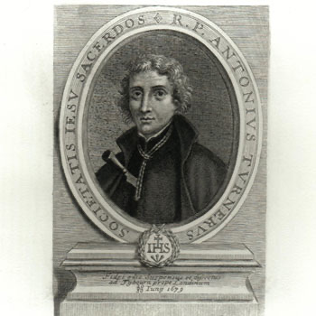

Isusovački blaženici
Svećenik
Bl. Antun Turner
1628. – 1679.
Nekadašnji protestant postao je isusovački svećenik i godinama služio engleskim katolicima. Poginuo je kao žrtva lažnih optužbi Titusa Oatesa protiv isusovaca.
Tekst je preveden i prilagođen uz pomoć umjetne inteligencije.

Izvor slike
- Spomendan
- 20. lipnja
- Zaštitništvo
- Nije navedeno u izvoru
- Životni vijek
- 1628. – 1679.
- Djelovanje
- Misije i evangelizacija · Obraćenje i novi počeci · Progoni i progonstvo · Mučeništvo
- Razdoblje
- 17. stoljeće
- Ulazak u Družbu Isusovu
- 1653.
- Svećeničko ređenje
- 1659.
- Rođenje — dostupni podaci
- 1628.; dan i mjesec nisu potvrđeni u provjerenom izvoru.
- Mjesto rođenja
- Engleska
- Datum smrti
- 20.06.1679.
- Mjesto smrti/mučeništva
- Tyburn, London, Engleska
- Okolnosti smrti/mučeništva
- Pogubljen vješanjem i sakaćenjem zbog katoličkoga svećeništva i djelovanja za progona.
- Uloga
- Svećenik
- Mučenik
- Da
- Ostale oznake
- Žrtva izmišljene Papističke urote Titusa Oatesa
- Pripadnost
- Isusovac
- Drugi oblici imena
- Anthony Turner · Anthony
Životopis
Antun Turner rođen je 1628. kao sin protestantskoga pastora. Tijekom studija u Cambridgeu prihvatio je katoličku vjeru. S bratom je otišao na engleski kolegij u Rimu, a 1653. pristupio isusovačkome novicijatu u Flandriji. Teologiju je studirao u Liègeu i 1659. primio svećenički red. Od 1661. osamnaest je godina služio katolicima u Worcestershireu.
Kada su počeli progoni povezani s navodnom urotom Titusa Oatesa, poglavari su mu savjetovali odlazak iz zemlje. U Londonu je u siječnju 1679. tražio pomoć za put, ali je nije pronašao. Posljednji je novac dao prosjaku, a zatim se predao vlastima kao svećenik i isusovac. Premda ga Oates nije imenovao među prvotnim optuženicima, odveden je u Newgate i suđeno mu je s drugim članovima Družbe.
Povijesni okvir procesa. Oates je tvrdio da je otkrio katolički plan za ubojstvo Karla II. i rušenje državnog poretka. Njegove neistinite optužbe izazvale su širi progon; svjedočenja su prihvaćana unatoč proturječjima. Turner, Thomas Whitbread, William Harcourt, Ivan Fenwick i Ivan Gavan zajedno su pogubljeni na Tyburnu 20. lipnja 1679. Proces je povezao petoricu svećenika različitih životnih putova u zajedničkoj osudi za izmišljenu urotu.
Tekst je preveden i prilagođen uz pomoć umjetne inteligencije.
Pročitaj više na izvornoj stranici ↗